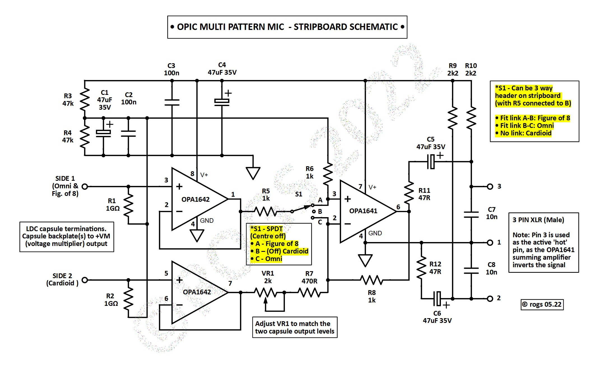
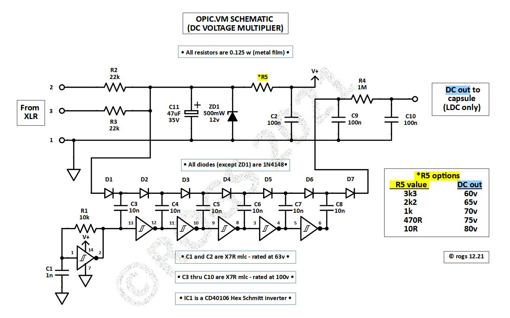

The schematics below shows the circuitry required to create a Multi-Pattern condenser microphone, utilising a dual sided large diameter condenser microphone capsule (LDC).
It is designed to connect to an external microphone pre-amp, fitted with 48v phantom power.
Note that this configuration only requires a single external capsule polarisation voltage supply.
It is especially suited to those dual sided capsules where each side may have slightly different output levels... An adjustment to balance the output levels is provided as part of the main circuitry.
• For applications where a dual external polarisation voltage supply is available
- and the two capsule output levels are well matched -
you might like to check out the schematics of the OPIC.FS2 version: HERE
The stripboard layouts are designed to fit into easily available BM800/NW700 donor bodies - but can also work well in Neumann U87 'style' clone bodies
• Just click on the image below for a PDF of the project details •

( Alternatively, you may prefer to build a mic using a PCB rather than stripboard...Hobby microphone builder Mic Scharf has developed a PCB for this version of the project,
which you can obtain from:
HERE )
This Multi-Pattern configuration requires a separate stripboard to generate the external capsule DC polarisation voltage. The schematic for that circuit is shown below.
• Just click on the image below for a PDF of the project details •
